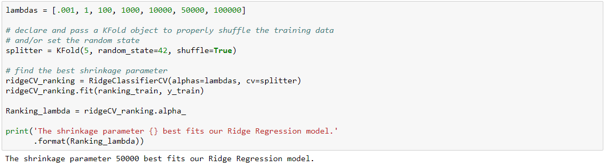

WIGGO vs. FIFA
Outline
- Read-In Data, Train-Test Split, Clean
- Exploring WIGGO and FIFA
- Logistic Regression
- Ridge Regression
- Conclusion
Before we can build our perfect model, we need to compare and test the WIGGO ranking system against the FIFA one. When we start making our final model, it will be important for us to know which of the two ranking systems is better at predicting the outcomes of these games. As such, we can build other, more interpretable models that give us some insight into which of these systems can really make more powerful predictions.
I: Read-In Data, Train-Test Split, Clean
II: Exploring WIGGO and FIFA
The plot below shows FIFA Rankings for nations plotted against WIGGO Rankings for the same nations. The plot is meant to show how well WIGGO rankings relate to their FIFA counterparts.
Unsurprisingly, we see that the WIGGO and FIFA Rankings are highly correlated, but also that they can rank teams quite differently. Generally, though, both ranking systems agree about which teams are better than others.
Note: The points along the right edge of the plot are the result of how WIGGO and FIFA handle new teams. FIFA automatically puts new teams at the bottom of the rankings, whereas WIGGO starts them closer to the middle. These points are scarce, and they are not enormous outliers, so we feel safe including them in our analysis.
Though there are two clear outliers in the corners of the plot, they are vastly outweighed by the other data. Since they will not significantly (if at all) affect our analysis, we are comfortable leaving them in the data set as well.
The following plot shows how WIGGO's Ratings relate to FIFA's. Opposite from the Rankings, these point ratings are meant to be an indicator of team strength, and they increase as a team wins games. So, better teams should have higher ratings, and worse teams should have lower ratings.
There is also an apparent relationship (although perhaps not linear) between a team's FIFA points and their WIGGO points at any given month. The three points along y = 0 were exceptions in our matching function, but since it's only three points, we'll go ahead with the analysis.
III: Logistic Regression
Now that we know how WIGGO's Rankings and Ratings compare to FIFA's, let's see which of the two can make more powerful World Cup predictions. To do this, we can use Multinomial nad Logistic Regression.
To simplify the comparison, we will only include the WIGGO and FIFA data in these regressions (i.e. each team's WIGGO Rankings and Ratings, and each team's FIFA Rankings and Ratings). Other predictors like travel distance, type of game, etc. will not be included in this section.
Now let's run our Multinomial and OvR Logistic Regressions: one each on just the FIFA data, and one each on the WIGGO data. The classification accuracies of both regressions on the last 2 World Cups are reported below.
Note: We cannot report the FIFA model's accuracy on the last 4 World Cups because FIFA data did not exist until after the 2010 World Cup. For the sake of completeness, and to show the consistency of WIGGO's predictions, though, we additionally show WIGGO's accuracy on the last 4 World Cups.
In both regressions, the WIGGO data outperformed the FIFA data by a significant margin. While this lone suggests that WIGGO is ths more accurate predictor of the two, there are more regression techniques that we can use to confirm this output.
IV: Ridge Regression
Another way for us to test these two ranking systems is to include both WIGGO and FIFA in a model that uses Regularization, and see which of the coefficients for the two sets of predictors gets shrunk toward 0. Here, we will run a Ridge Regression on all the predictors in the dataset, though we will care most about the ones that involve WIGGO and FIFA data.
The Ridge model performs fairly well, though, this information isn't terribly useful for comparing WIGGO and FIFA. Instead, we need to investigate the coefficients that the model assigns to each of the predictors.
The following bar plots show how important the WIGGO/FIFA Rankings and Ratings are to the Ridge Model we just fit. The first plot displays the coefficients of each predictor when the model predicts the probability that Team A loses, and the second plot shows the same coefficients when the model finds the probability that Team A wins.
There are two aspects of these bar graphs that we should pay particular attention to: the magnitude, and the direction of each bar. Higher magnitudes indicate that a predictor is more important to the model, and the direction of the bar indicates the sign of the relationship between the response variable and the predictor.
At a first glance, for both plots and nearly every pair of WIGGO and FIFA predictor, we can see that the Ridge model prioritizes the Wiggo version over the FIFA one (shown by their higher magnitudes). Furthermore, each of the WIGGO coefficients point in the direction that we would expect them to point, given the outcome that they are predicting.
For example, let's look at the second plot, which shows how the model values these predictors when it predicts the probability that Team A Wins:
- We would expect Team A to win more often when its ranking is low (better), so we should see a negative relationship between these two variables. Indeed, Team A's WIGGO ranking has this relationship. Its FIFA ranking does not.
- Accordingly, we would expect Team A to win more often when Team B's ranking is high (worse). The model interprets Team B's WIGGO ranking correctly; not so for the FIFA ranking.
- Opposite from ranking, a team's rating (points) increases as a team gets stronger. Thus, we'd expect that teams with higher ratings will win more often, and teams with lower ratings will win less often. The coefficents of the WIGGO data present this accurately.
Based on this output, it is safe to conclude that the Ridge model weights the WIGGO data much more heavily than it does the FIFA data.
Though, we can still get more precise with our analysis. Let's try running a Ridge regression on just the WIGGO and FIFA Rankings, and then another on just the WIGGO and FIFA Ratings.
The following bar plot is built in a similar fashion to the previous one, though it shows the results of a Ridge regression model that was fit on just the Ranking data.
As we would expect, the Ridge model values the WIGGO data far more than it values the FIFA data. Each of WIGGO's coefficients are much greater than FIFA's are, and all of WIGGO's bars point in the expected direction.
Now let's do the same with the WIGGO/FIFA Ratings:
And again, the model shows exactly what we would expect.
V: Conclusion
By now, it is obvious that WIGGO provides more prediction power than FIFA does when it comes to predicting World Cup games. Each regression, whether trained on the Rankings, the Ratings, or all the data combined, indicates that the WIGGO data is more closely related to the outcomes of World Cup matches than the FIFA data is. As such, we will use the WIGGO data as our main indicator of team strength as we build our final model.